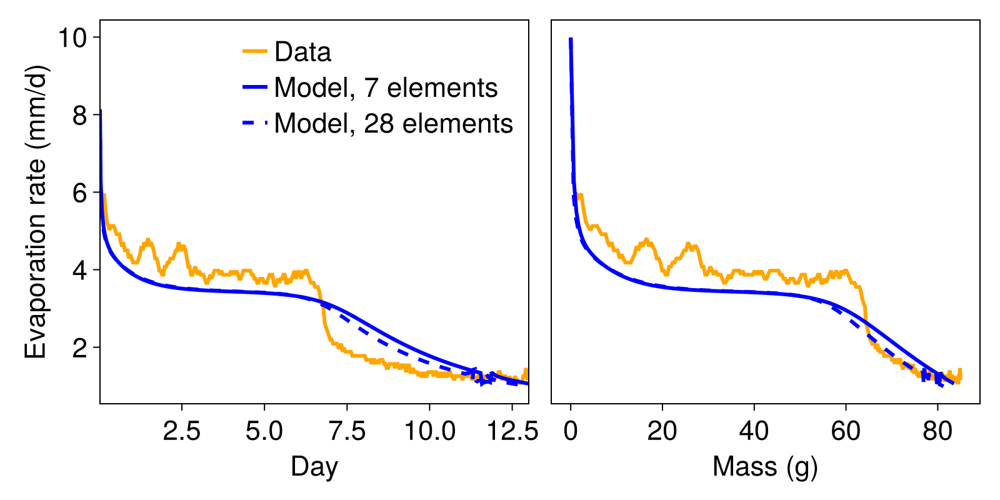

Soil evaporation
This sets up the simulation that mimicks the coarse sand lab experiment presented in Figures 7 and 8a of Lehmann et al. [14]
using CairoMakie
import SciMLBase
import ClimaTimeSteppers as CTS
using Thermodynamics
using ClimaCore
import ClimaParams as CP
using SurfaceFluxes
using StaticArrays
using Statistics
using Dates
using DelimitedFiles: readdlm
using ClimaUtilities.Utils: linear_interpolation
using ClimaLand
using ClimaLand.Domains: Column
import ClimaLand.Simulations: LandSimulation, solve!
using ClimaLand.Soil
import ClimaLand
import ClimaLand.Parameters as LP
import SurfaceFluxes.Parameters as SFP
FT = Float64;
toml_dict = LP.create_toml_dict(FT);
earth_param_set = LP.LandParameters(toml_dict);
thermo_params = LP.thermodynamic_parameters(earth_param_set);WARNING: using IntervalArithmetic.numtype in module TaylorSeries conflicts with an existing identifier.
┌ Warning: Error requiring `IntervalArithmetic` from `TaylorSeries`
│ exception =
│ LoadError: UndefVarError: `IntervalBox` not defined in `TaylorSeries`
│ Suggestion: check for spelling errors or missing imports.
│ Stacktrace:
│ [1] top-level scope
│ @ ~/.julia/packages/TaylorSeries/ZBRjU/src/intervals.jl:171
│ [2] include(mod::Module, _path::String)
│ @ Base ./Base.jl:562
│ [3] include(x::String)
│ @ TaylorSeries ~/.julia/packages/TaylorSeries/ZBRjU/src/TaylorSeries.jl:17
│ [4] top-level scope
│ @ ~/.julia/packages/Requires/1eCOK/src/Requires.jl:40
│ [5] eval
│ @ ./boot.jl:430 [inlined]
│ [6] eval
│ @ ~/.julia/packages/TaylorSeries/ZBRjU/src/TaylorSeries.jl:17 [inlined]
│ [7] (::TaylorSeries.var"#54#57")()
│ @ TaylorSeries ~/.julia/packages/Requires/1eCOK/src/require.jl:101
│ [8] macro expansion
│ @ timing.jl:421 [inlined]
│ [9] err(f::Any, listener::Module, modname::String, file::String, line::Any)
│ @ Requires ~/.julia/packages/Requires/1eCOK/src/require.jl:47
│ [10] (::TaylorSeries.var"#53#56")()
│ @ TaylorSeries ~/.julia/packages/Requires/1eCOK/src/require.jl:100
│ [11] withpath(f::Any, path::String)
│ @ Requires ~/.julia/packages/Requires/1eCOK/src/require.jl:37
│ [12] (::TaylorSeries.var"#52#55")()
│ @ TaylorSeries ~/.julia/packages/Requires/1eCOK/src/require.jl:99
│ [13] #invokelatest#2
│ @ ./essentials.jl:1055 [inlined]
│ [14] invokelatest
│ @ ./essentials.jl:1052 [inlined]
│ [15] foreach(f::typeof(invokelatest), itr::Vector{Function})
│ @ Base ./abstractarray.jl:3187
│ [16] loadpkg(pkg::Base.PkgId)
│ @ Requires ~/.julia/packages/Requires/1eCOK/src/require.jl:27
│ [17] #invokelatest#2
│ @ ./essentials.jl:1055 [inlined]
│ [18] invokelatest
│ @ ./essentials.jl:1052 [inlined]
│ [19] run_package_callbacks(modkey::Base.PkgId)
│ @ Base ./loading.jl:1401
│ [20] _require_search_from_serialized(pkg::Base.PkgId, sourcepath::String, build_id::UInt128, stalecheck::Bool; reasons::Dict{String, Int64}, DEPOT_PATH::Vector{String})
│ @ Base ./loading.jl:2065
│ [21] _require(pkg::Base.PkgId, env::String)
│ @ Base ./loading.jl:2527
│ [22] __require_prelocked(uuidkey::Base.PkgId, env::String)
│ @ Base ./loading.jl:2388
│ [23] #invoke_in_world#3
│ @ ./essentials.jl:1089 [inlined]
│ [24] invoke_in_world
│ @ ./essentials.jl:1086 [inlined]
│ [25] _require_prelocked(uuidkey::Base.PkgId, env::String)
│ @ Base ./loading.jl:2375
│ [26] macro expansion
│ @ ./loading.jl:2314 [inlined]
│ [27] macro expansion
│ @ ./lock.jl:273 [inlined]
│ [28] __require(into::Module, mod::Symbol)
│ @ Base ./loading.jl:2271
│ [29] #invoke_in_world#3
│ @ ./essentials.jl:1089 [inlined]
│ [30] invoke_in_world
│ @ ./essentials.jl:1086 [inlined]
│ [31] require(into::Module, mod::Symbol)
│ @ Base ./loading.jl:2260
│ [32] eval
│ @ ./boot.jl:430 [inlined]
│ [33] include_string(mapexpr::typeof(identity), mod::Module, code::String, filename::String)
│ @ Base ./loading.jl:2734
│ [34] include_string
│ @ ./loading.jl:2744 [inlined]
│ [35] #47
│ @ ~/.julia/packages/Literate/TujCy/src/Literate.jl:934 [inlined]
│ [36] task_local_storage(body::Literate.var"#47#49"{String, Bool, Module, String}, key::Symbol, val::String)
│ @ Base ./task.jl:315
│ [37] #46
│ @ ~/.julia/packages/Literate/TujCy/src/Literate.jl:930 [inlined]
│ [38] (::IOCapture.var"#5#9"{Core.TypeofBottom, Literate.var"#46#48"{String, Bool, Module, String}, IOContext{Base.PipeEndpoint}, IOContext{Base.PipeEndpoint}, IOContext{Base.PipeEndpoint}, IOContext{Base.PipeEndpoint}})()
│ @ IOCapture ~/.julia/packages/IOCapture/Y5rEA/src/IOCapture.jl:170
│ [39] with_logstate(f::IOCapture.var"#5#9"{Core.TypeofBottom, Literate.var"#46#48"{String, Bool, Module, String}, IOContext{Base.PipeEndpoint}, IOContext{Base.PipeEndpoint}, IOContext{Base.PipeEndpoint}, IOContext{Base.PipeEndpoint}}, logstate::Base.CoreLogging.LogState)
│ @ Base.CoreLogging ./logging/logging.jl:524
│ [40] with_logger(f::Function, logger::Base.CoreLogging.ConsoleLogger)
│ @ Base.CoreLogging ./logging/logging.jl:635
│ [41] capture(f::Literate.var"#46#48"{String, Bool, Module, String}; rethrow::Type, color::Bool, passthrough::Bool, capture_buffer::IOBuffer, io_context::Vector{Any})
│ @ IOCapture ~/.julia/packages/IOCapture/Y5rEA/src/IOCapture.jl:167
│ [42] execute_block(sb::Module, block::String; inputfile::String, fake_source::String, softscope::Bool, continue_on_error::Bool)
│ @ Literate ~/.julia/packages/Literate/TujCy/src/Literate.jl:928
│ [43] execute_block
│ @ ~/.julia/packages/Literate/TujCy/src/Literate.jl:912 [inlined]
│ [44] execute_markdown!(io::IOBuffer, sb::Module, block::String, outputdir::String; inputfile::String, fake_source::String, flavor::Literate.DocumenterFlavor, image_formats::Vector{Tuple{MIME, String}}, file_prefix::String, softscope::Bool, continue_on_error::Bool)
│ @ Literate ~/.julia/packages/Literate/TujCy/src/Literate.jl:669
│ [45] (::Literate.var"#30#32"{Dict{String, Any}, IOBuffer, Module, Literate.CodeChunk, Int64})()
│ @ Literate ~/.julia/packages/Literate/TujCy/src/Literate.jl:640
│ [46] cd(f::Literate.var"#30#32"{Dict{String, Any}, IOBuffer, Module, Literate.CodeChunk, Int64}, dir::String)
│ @ Base.Filesystem ./file.jl:112
│ [47] markdown(inputfile::String, outputdir::String; config::Dict{Any, Any}, kwargs::@Kwargs{execute::Bool, documenter::Bool, preprocess::var"#mdpre#3"{String}})
│ @ Literate ~/.julia/packages/Literate/TujCy/src/Literate.jl:639
│ [48] markdown (repeats 2 times)
│ @ ~/.julia/packages/Literate/TujCy/src/Literate.jl:603 [inlined]
│ [49] (::var"#1#2"{String})()
│ @ Main ~/work/ClimaLand.jl/ClimaLand.jl/docs/make.jl:47
│ [50] cd(f::var"#1#2"{String}, dir::String)
│ @ Base.Filesystem ./file.jl:112
│ [51] generate_tutorial(tutorials_dir::String, tutorial::String)
│ @ Main ~/work/ClimaLand.jl/ClimaLand.jl/docs/make.jl:37
│ [52] (::Serialization.__deserialized_types__.var"#12#13")(t::String)
│ @ Main ~/work/ClimaLand.jl/ClimaLand.jl/docs/make.jl:59
│ [53] exec_from_cache(rr::RemoteChannel{Channel{Any}}, args::String; kwargs::@Kwargs{})
│ @ Distributed /opt/hostedtoolcache/julia/1.11.7/x64/share/julia/stdlib/v1.11/Distributed/src/workerpool.jl:354
│ [54] invokelatest(::Any, ::Any, ::Vararg{Any}; kwargs::@Kwargs{})
│ @ Base ./essentials.jl:1055
│ [55] invokelatest(::Any, ::Any, ::Vararg{Any})
│ @ Base ./essentials.jl:1052
│ [56] (::Distributed.var"#118#120"{Distributed.CallMsg{:call_fetch}})()
│ @ Distributed /opt/hostedtoolcache/julia/1.11.7/x64/share/julia/stdlib/v1.11/Distributed/src/process_messages.jl:287
│ [57] run_work_thunk(thunk::Distributed.var"#118#120"{Distributed.CallMsg{:call_fetch}}, print_error::Bool)
│ @ Distributed /opt/hostedtoolcache/julia/1.11.7/x64/share/julia/stdlib/v1.11/Distributed/src/process_messages.jl:70
│ in expression starting at /home/runner/.julia/packages/TaylorSeries/ZBRjU/src/intervals.jl:171
└ @ Requires ~/.julia/packages/Requires/1eCOK/src/require.jl:51
We model evaporation using Monin-Obukhov surface theory. In our soil model, it is not possible to set the initial condition corresponding to MOST fluxes, but not include radiative fluxes. This is because for land surface models does not make sense to include atmospheric forcing but not radiative forcing.
Because of this, we need to supply downward welling short and long wave radiation. We chose SW = 0 and LW = σT^4, in order to approximately balance out the blackbody emission of the soil which is accounted for by our model. Our assumption is that in the lab experiment there was no radiative heating or cooling of the soil.
Timestepping:
start_date = DateTime(2005)
stop_date = start_date + Day(13)
dt = Float64(900.0)
SW_d = (t) -> 0
LW_d = (t) -> 301.15^4 * 5.67e-8
radiation = PrescribedRadiativeFluxes(
FT,
TimeVaryingInput(SW_d),
TimeVaryingInput(LW_d),
start_date,
);Set up atmospheric conditions that result in the potential evaporation rate obsereved in the experiment. Some of these conditions are reported in the paper.
T_air = FT(301.15)
rh = FT(0.38)
esat = Thermodynamics.saturation_vapor_pressure(
thermo_params,
T_air,
Thermodynamics.Liquid(),
)
e = rh * esat
q = FT(0.622 * e / (101325 - 0.378 * e))
precip = (t) -> 0.0
T_atmos = (t) -> T_air
u_atmos = (t) -> 0.44
q_atmos = (t) -> q
h_atmos = FT(0.1)
P_atmos = (t) -> 101325
gustiness = FT(1e-2)
atmos = PrescribedAtmosphere(
TimeVaryingInput(precip),
TimeVaryingInput(precip),
TimeVaryingInput(T_atmos),
TimeVaryingInput(u_atmos),
TimeVaryingInput(q_atmos),
TimeVaryingInput(P_atmos),
start_date,
h_atmos,
toml_dict;
gustiness = gustiness,
);Define the boundary conditions
top_bc = ClimaLand.Soil.AtmosDrivenFluxBC(atmos, radiation);
zero_water_flux = WaterFluxBC((p, t) -> 0)
zero_heat_flux = HeatFluxBC((p, t) -> 0)
boundary_fluxes = (;
top = top_bc,
bottom = WaterHeatBC(; water = zero_water_flux, heat = zero_heat_flux),
);[ Info: Warning: No runoff model was provided; zero runoff generated.
Define the parameters n and alpha estimated by matching air entry and Δh_cap values in Lehmann paper
K_sat = FT(225.1 / 3600 / 24 / 1000)
vg_n = FT(8.91)
vg_α = FT(3)
hcm = vanGenuchten{FT}(; α = vg_α, n = vg_n)
ν = FT(0.43)
θ_r = FT(0.043)
S_s = FT(1e-3)
ν_ss_om = FT(0.0)
ν_ss_quartz = FT(1.0)
ν_ss_gravel = FT(0.0)
emissivity = FT(1.0)
z_0m = FT(1e-2)
z_0b = FT(1e-2)
d_ds = FT(0.01)
params = ClimaLand.Soil.EnergyHydrologyParameters(
toml_dict;
ν,
ν_ss_om,
ν_ss_quartz,
ν_ss_gravel,
hydrology_cm = hcm,
K_sat,
S_s,
θ_r,
emissivity,
z_0m,
z_0b,
d_ds,
);IC functions
function hydrostatic_equilibrium(z, z_interface, params)
(; ν, S_s, hydrology_cm) = params
(; α, n, m) = hydrology_cm
if z < z_interface
return -S_s * (z - z_interface) + ν
else
return ν * (1 + (α * (z - z_interface))^n)^(-m)
end
end
function set_ic!(Y, p, t0, model)
params = model.parameters
z = model.domain.fields.z
FT = eltype(Y.soil.ϑ_l)
Y.soil.ϑ_l .= hydrostatic_equilibrium.(z, FT(-0.001), params)
Y.soil.θ_i .= 0
T = FT(296.15)
ρc_s = @. Soil.volumetric_heat_capacity(
Y.soil.ϑ_l,
FT(0),
params.ρc_ds,
params.earth_param_set,
)
Y.soil.ρe_int =
Soil.volumetric_internal_energy.(FT(0), ρc_s, T, params.earth_param_set)
endset_ic! (generic function with 1 method)Domain - single column
zmax = FT(0)
zmin = FT(-0.35)
nelems = 28
soil_domain = Column(; zlim = (zmin, zmax), nelements = nelems);
z = ClimaCore.Fields.coordinate_field(soil_domain.space.subsurface).z;Soil model, and create the prognostic vector Y and cache p:
soil = Soil.EnergyHydrology{FT}(;
parameters = params,
domain = soil_domain,
boundary_conditions = boundary_fluxes,
sources = (),
);Timestepping:
timestepper = CTS.ARS111();
ode_algo = CTS.IMEXAlgorithm(
timestepper,
CTS.NewtonsMethod(
max_iters = 6,
update_j = CTS.UpdateEvery(CTS.NewNewtonIteration),
),
);
saveat = Second(3600.0)
saving_cb = ClimaLand.NonInterpSavingCallback(start_date, stop_date, saveat)
sv_hr = saving_cb.affect!.saved_values
simulation = LandSimulation(
start_date,
stop_date,
dt,
soil;
set_ic! = set_ic!,
solver_kwargs = (; saveat),
timestepper = ode_algo,
user_callbacks = (saving_cb,),
updateat = Second(3600.0),
diagnostics = (),
);Solve
sol_hr = solve!(simulation);Repeat at lower resolution
zmax = FT(0)
zmin = FT(-0.35)
nelems = 7
soil_domain = Column(; zlim = (zmin, zmax), nelements = nelems);
z = ClimaCore.Fields.coordinate_field(soil_domain.space.subsurface).z;Soil model, and create the prognostic vector Y and cache p:
soil = Soil.EnergyHydrology{FT}(;
parameters = params,
domain = soil_domain,
boundary_conditions = boundary_fluxes,
sources = (),
);Timestepping:
timestepper = CTS.ARS111();
ode_algo = CTS.IMEXAlgorithm(
timestepper,
CTS.NewtonsMethod(
max_iters = 6,
update_j = CTS.UpdateEvery(CTS.NewNewtonIteration),
),
);
saveat = Second(3600.0)
saving_cb = ClimaLand.NonInterpSavingCallback(start_date, stop_date, saveat);
sv_lr = saving_cb.affect!.saved_values;
simulation = LandSimulation(
start_date,
stop_date,
dt,
soil;
set_ic! = set_ic!,
updateat = Second(3600.0),
solver_kwargs = (; saveat),
timestepper = ode_algo,
user_callbacks = (saving_cb,),
diagnostics = (),
);Solve
sol_lr = solve!(simulation);Extract the evaporation at each saved step, and convert to mm/day
evap_hr =
[
parent(sv_hr.saveval[k].soil.turbulent_fluxes.vapor_flux_liq)[1] for
k in 1:length(sol_hr.t)
] .* (1000 * 3600 * 24)
evap_lr =
[
parent(sv_lr.saveval[k].soil.turbulent_fluxes.vapor_flux_liq)[1] for
k in 1:length(sol_lr.t)
] .* (1000 * 3600 * 24)
evaporation_data = ClimaLand.Artifacts.lehmann2008_evaporation_data();
ref_soln_E = readdlm(evaporation_data, ',')
ref_soln_E_350mm = ref_soln_E[2:end, 1:2]
data_dates = ref_soln_E_350mm[:, 1]
data_e = ref_soln_E_350mm[:, 2];Goodness of fit metrics: Mean Absolute Error (MAE) and Kling-Gupta Efficiency (KGE)
mae(x, obs) = mean(abs.(x .- obs));
function kge(x, obs)
σx = std(x)
σo = std(obs)
μx = mean(x)
μo = mean(obs)
α = σx / σo
β = μx / μo
r = mean((x .- μx) .* (obs .- μo)) / (σx * σo)
return 1 - sqrt((β - 1)^2 + (r - 1)^2 + (α - 1)^2)
end;We need to interpolate the simulation output to the timestamps of the data
interpolated_lr = [
linear_interpolation(FT.(sol_lr.t) ./ 3600 ./ 24, evap_lr, data_date)
for data_date in data_dates
]
interpolated_hr = [
linear_interpolation(FT.(sol_hr.t) ./ 3600 ./ 24, evap_hr, data_date)
for data_date in data_dates
];@show mae(interpolated_lr, data_e)0.5103765195086439@show mae(interpolated_hr, data_e)0.44790729244355487@show kge(interpolated_lr, data_e)0.7278547007450509@show kge(interpolated_hr, data_e)0.7643283494250823Figures
fig = Figure(size = (800, 400), fontsize = 22)
ax = Axis(
fig[1, 1],
xlabel = "Day",
ylabel = "Evaporation rate (mm/d)",
xgridvisible = false,
ygridvisible = false,
)
CairoMakie.xlims!(minimum(data_dates), maximum(float.(sol_lr.t) ./ 3600 ./ 24))
CairoMakie.lines!(
ax,
FT.(data_dates),
FT.(data_e),
label = "Data",
color = :orange,
linewidth = 3,
)
CairoMakie.lines!(
ax,
FT.(sol_lr.t) ./ 3600 ./ 24,
evap_lr,
label = "Model, 7 elements",
color = :blue,
linewidth = 3,
)
CairoMakie.lines!(
ax,
FT.(sol_hr.t) ./ 3600 ./ 24,
evap_hr,
label = "Model, 28 elements",
color = :blue,
linestyle = :dash,
linewidth = 3,
)
CairoMakie.axislegend(ax, framevisible = false)
ax = Axis(
fig[1, 2],
xlabel = "Mass (g)",
yticksvisible = false,
yticklabelsvisible = false,
xgridvisible = false,
ygridvisible = false,
)
A_col = π * (0.027)^2
mass_0_hr = sum(sol_hr.u[1].soil.ϑ_l) * 1e6 * A_col
mass_loss_hr = [
mass_0_hr - sum(sol_hr.u[k].soil.ϑ_l) * 1e6 * A_col for
k in 1:length(sol_hr.t)
]
mass_0_lr = sum(sol_lr.u[1].soil.ϑ_l) * 1e6 * A_col
mass_loss_lr = [
mass_0_lr - sum(sol_lr.u[k].soil.ϑ_l) * 1e6 * A_col for
k in 1:length(sol_lr.t)
]
CairoMakie.lines!(
ax,
cumsum(FT.(data_e)) ./ (1000 * 24) .* A_col .* 1e6,
FT.(data_e),
color = :orange,
linewidth = 3,
)
CairoMakie.lines!(ax, mass_loss_lr, evap_lr, color = :blue, linewidth = 3)
CairoMakie.lines!(
ax,
mass_loss_hr,
evap_hr,
color = :blue,
linewidth = 3,
linestyle = :dash,
)
save("evaporation_lehmann2008_fig8.png", fig);
This page was generated using Literate.jl.